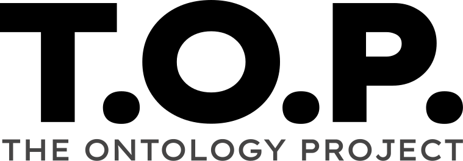

This roadmap captures the work queued behind the core ontology effort, the decisions about how that work is staged, and the items that need to land before TOP moves out of CLAUDE OUTPUTS/ into github.com/scientixai/the-ontology-project under Apache 2.0. It supplements the per-spec open-issues tables and becomes the single place where future work is tracked once we have more than one finished top-level.
The clinical-trials reference graph is the first reference graph being built on TOP. The OOUX hierarchy is locked at eight top-levels: Sponsor, Study, Site, Participant, Visit, Investigational Product, Oversight Body, Event. All seven OOUX boundary decisions are resolved (see ooux-hierarchy.html).
Sponsor is fully sealed at v0.1.4-strawman with eight verification questions answered, four SHACL-SPARQL domain invariants encoded (one soft warning, three hard violations), one worked example validating clean against pyshacl, and a complete spec document (sponsor-spec.html).
Study is fully sealed at v0.3.0-strawman with twelve verification questions pending Bo's review, six SHACL-SPARQL domain invariants encoded covering Study lifecycle and design constraints, four worked examples extended with Endpoint / InclusionCriterion / ScheduleOfAssessments entities and validating clean against pyshacl, and a complete spec document (study-spec.html).
Participant is fully sealed at v0.4.0-strawman as the human in the trial-conduct realm. The lift forced two architectural extensions surfaced during planning: Recruit lifts as a separate ninth top-level (top-level count moves 8 → 9) for the pre-consent recruitment realm, recognizing the recruiter as a distinct operator role with its own workflow and lighter PHI surface; and a multi-realm projection posture — the same human is a Participant in trial conduct, a Patient in care, a Claimant in claims, an RWE-Patient in research warehouses; TOP carries one realm (trial conduct), the others are projection-adapter targets. Outcomes:
SCREENING through LOST_TO_FOLLOW_UP) with NGSI-LD temporal-property semantics for trajectory queryability.convertedFromRecruit with InformedConsent existence as the canonical conversion event.screeningNumber, randomizationNumber, participantStatus values like ON_TREATMENT / WITHDRAWN. Standards cross-walks (FHIR R5 ResearchSubject, SDTM DM + DS + IE, CDASH DM) live below the line as projection-adapter rules. USDM v4 has no per-subject runtime entity.Site has lifted to v0.2.0-strawman as a combined Site + StudySite spec (site-spec.html, 977 lines), with 14 verification questions pending Bo's review. The Site lift forced an architectural correction (Bo's "Site is the most important object, that's where trials operate" framing and the corrected operational hierarchy Site → StudySite → Study → Protocol → SOA → Visit → Activity). Outcomes:
usdm:StudySite (verified against cdisc-org/usdm via WebFetch).essentialRecordPurpose + responsibleParty enums.operatedBy / usedBy / oversightHeldBy schema-level role pattern. Original "visibility-as-projection" framing superseded by R3 Section 3.9 / 2.12 oversight-as-relationship grounding.managesSite and playsSponsorRole. SHACL invariant 9 carries the IIT exception.The Site spec extends the Sponsor template with five site-specific sections: architectural anchor (operational hierarchy), R3 alignment (Sections 2 / 3 / 4 / Appendix C / Annex 2), ISF alignment (legacy operational view, 23 sections mapped), lifecycle state machines (Site + StudySite separately), persona-to-Site-view matrix (10 roles), SFQ projection (named query template), and delegation matrix.
The Sponsor spec template plus Site spec extensions form the pattern for the remaining six top-levels. The translator scaffold's pre-emission guards still hold: polysemous-verb detection, target-missing minCount relaxation, target-missing class-constraint suppression.
Visit as the fourth top-level spec. Visit is the natural follow-on because the Study spec hands Visit-template references (via Schedule of Assessments) and the Site / StudySite spec hands Visit-occurrence references (via StudySite.hostsVisit). The Visit spec must resolve the template-vs-occurrence split that the OOUX conflates: the protocol-defined Visit-template (an SOA item) is distinct from the actual Visit-occurrence (a participant attended at a date). Either two entities (Visit-template + Visit-occurrence) or a discriminator on a unified Visit. Visit Observation is the OOUX sub-object that landed under Visit during the Other Clinical Event boundary decision (Path C). Its specification needs the derivedFrom relationship that links it forward to a categorized Other Clinical Event when a CRA escalates. Tracked corrections to apply when Visit lifts: the OOUX has Visit pointing directly at 1 Site; should be 1 StudySite. The definition-side chain (Protocol → SOA → Visit-template → Activity) and operational-side chain (StudySite → Visit-occurrence → Activity-occurrence) meet at the Visit; the OOUX conflates them.
Event, with Other Clinical Event and the eventCategory enum. The single-container Event holds AE, SAE, Deviation, Discrepancy, Safety Signal, Safety Report, and Other Clinical Event. The eventCategory enum carries the discrimination. The reportability handoff workflow (Visit Observation → Other Clinical Event via derivedFrom) is the operational tie between Visit and Event.
Participant, Investigational Product, Oversight Body, in any reasonable order. Participant is anchored by StudySite (StudySite.hasParticipant) and Visit-occurrence so it benefits from Visit being lifted first. Tracked correction: the OOUX has Participant pointing directly at 1 Site; should be 1 StudySite (per the operational hierarchy). IP is referenced by Sponsor's supplies relationship and by Visit Activity (the IP-administration step). Oversight Body is the IRB / EC / DSMB / IDMC top-level that Sponsor's interfacesWith and StudySite's hasIRB relationships target.
Horizontal completions in parallel. Lifted as of v0.2.0: Organization, Document (R3 Appendix C-aligned), StudySite, Person, System (R3 Section 4.3-aligned), Log (with logType discriminator covering CommunicationLog), Equipment, StorageLocation, Credential. Still flagged-missing as of v0.2.0 (lifting in v0.3 or as their referencing top-level lifts): RegulatoryAuthority, Contract, MonitoringVisit, Audit, TrainingRecord, Enrollment, StudyStartupPackage, OversightBody, Visit, Participant, CRF, Sample, Shipment, Meeting, Publication, SOP, TrainingProgram, CRO, Country, DataTransferAgreement.
OBO Foundry covers the biomedical-knowledge layer (genes, phenotypes, anatomy, chemistry). TOP covers the operator layer (workflow, sponsorship, sites, visits, audit trail). The two are complementary. Direct entity-level OBO cross-walks are deferred until biological-domain top-levels (Adverse Event, Sample, Lab Result, Diagnosis) lift in v0.3 or later, and even then much of the work is reachable transitively through existing public mappings.
Three community-standard infrastructure pieces TOP should adopt rather than reinvent:
top:, topc:, future topcmc:, topdh:, etc.) should be registered there as TOP graduates from strawman to public release. Aligns identifier governance with OBO Foundry conventions. Tracked as a v0.2 publish-time deliverable.Tracked here as a placeholder until the core objects are done.
The core ontology defines what entities exist, how they relate, and what invariants must hold. It does not define how a given role consumes those entities for a given job. A Sponsor PM looking at Study X cares about a different projection than a Regulator looking at Study X. Both project from the same underlying graph, but the operationally useful view is different. Today these projections are sketched ad hoc in the spec's query-patterns section (§5 of the Sponsor spec). That works for documentation. It does not work as a contract for downstream tooling.
What this item builds, when the project gets to it:
A reference-architecture artifact that identifies personas, roles, and jobs-to-be-done for each top-level entity. The Sponsor spec's six-perspective query patterns (site, patient, regulator, SMO, sponsor portfolio analyst, compliance officer) are a starting point but need to be made systematic across all eight top-levels. The output is a matrix: top-level entity × persona × job-to-be-done × the projection that serves it.
Common projections per role, defined as named query templates rather than ad hoc query examples. A "Sponsor PM Daily View" projects the active Studies, the open Action Items, and the upcoming Milestones for a given Sponsor entity. An "Investigator Today View" projects the visits scheduled at a Site for the current day plus the open queries on those visits. These projections get formal names and live as separate artifacts (markdown files, wiki pages) so they can evolve independently of the core ontology. The core ontology references them; it does not own them.
Reference patterns documented as separate, community-contributable artifacts. The core ontology stays compact and load-bearing. Reference patterns live next to it in the same repository (under reference-patterns/ or similar), but evolve through community contribution without requiring the core to change. This honors the federation pattern at the documentation layer the same way the prefix architecture honors it at the schema layer: the core stays narrow, the periphery stays open.
The benefits this delivers: reduced maintenance burden on the core ontology because role-specific work does not bleed into the schema; increased flexibility for adopters because they can layer their own projections on top of the core without forking the schema; community-driven evolution of patterns and best practices without needing a central catalog to register with.
Sequencing: solidify all eight top-level entities first (currently in progress); then create a reference-patterns/ placeholder; then open a separate workstream to define personas, roles, and jobs-to-be-done; then invite community contributions through whatever governance shape TOP has by then (working group, GitHub PR review, RFC process).
This is a v0.3 or later effort. It does not block v0.1 of the clinical-research reference graph. It does shape how v0.2 packages the v0.1 work for community consumption, so it lands before the public Apache 2.0 publish.
The roadmap is edited in place. Major shifts (a new reference graph entering the queue, a working group spinning up, a phase boundary crossing) get a header bump.
Once TOP moves fully into the public GitHub repo, granular tracking moves to GitHub Issues. The roadmap document settles into the high-altitude view, where we are, what ships next, why; the issue queue carries the day-to-day work and takes community contributions through the normal PR-and-review path.